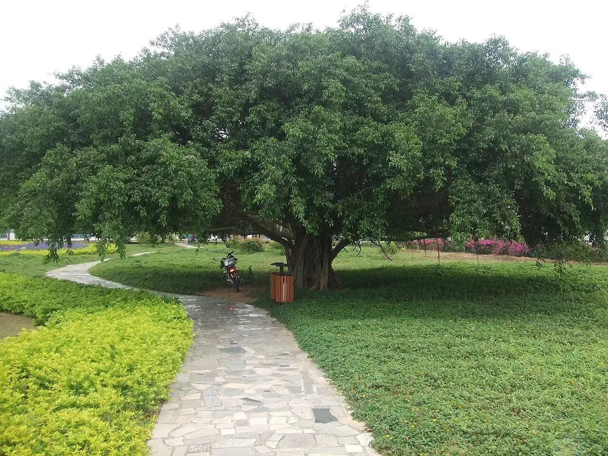

🧭 Nearby Destinations
Neighboring cities worth a side trip

Anyone who wants to escape the winter chill yet crave sea breeze puts Sanya, Hainan, at the top of their list. Ringed by sea on three sides with endless coconut palms, its water stays swimmable from October to March, the easiest and most worry-free escape to the sun.
Common questions before you go
October through March is the golden period: while the north freezes, the sea here stays above 20 degrees C, perfect for swimming and snorkeling. Summer is hot and typhoon-prone, so it is poorer value than winter.
Plan four to five relaxed days: two on the islands (Wuzhizhou or West Island), one at Nanshan and Tianya Haijiao, and the rest lingering in Yalong Bay and eating seafood.
Skip the scenic-area stalls; buy at First Market and have a processing shop cook it. Chunyuan and the Laid-off Workers' Seafood Square post clear prices, so ask the processing fee before ordering.
三亚最值得去的地方
三亚特色美食推荐
Sanya's most authentic seafood experience: pick your own live catch at the marke...
A Hainan specialty rice noodle with a rich, savory broth and generous toppings. ...
A hotpot built on fresh coconut water, simmered with Wenchang chicken — light, s...
One of Hainan's four famous dishes — tender mutton with none of the gaminess. Eq...
交通·住宿·最佳时间·注意事项
Neighboring cities worth a side trip
三亚's immersive visual journey